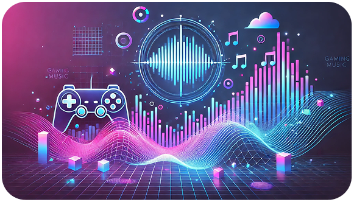
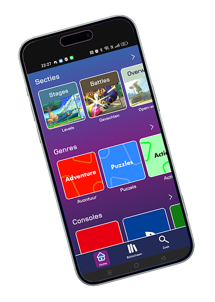
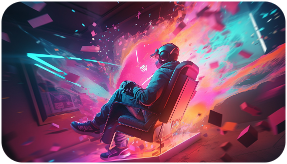

Geniet van en luister naar de beste gaming-soundtracks
Met PlayQuest krijg je toegang tot een enorme bibliotheek aan game-soundtracks, thememuziek en iconische scores uit verschillende genres.
Of je nu wilt chillen, studeren, gamen of gewoon nostalgie wil voelen—PlayQuest brengt jouw favoriete gamewereld tot leven met muziek.
Download nu en begin met luisteren

Wat kun je met PlayQuest?
- Luisteren naar soundtracks van bekende en indie games
- Afspeellijsten maken op basis van je favoriete genres of games
- Ontdekken van nieuwe games via hun muziek
- Muziek luisteren terwijl je gamet
Waarom game-muziek?
Game soundtracks zijn ontworpen om sfeer, spanning en emotie op te bouwen. Dat maakt ze perfect om te luisteren tijdens het gamen, werken of ontspannen.

Interrese?
download dan op...
Of...
Download hier